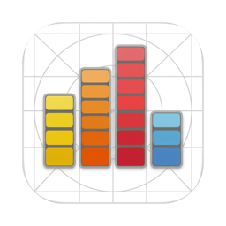
A small, live graph in your menu bar: CPU and every core, GPU, Neural Engine, memory, disk, battery and Wi-Fi. Click it for your top processes and a panel of readings. Everything is read on your Mac, and nothing is sent anywhere. If you keep the macOS Battery and Wi-Fi menu-bar items only to check their status, its battery and Wi-Fi bars can stand in for them (without their controls), so you can hide those and free up space in your menu bar.
Real captures on a dark menu bar. Each bar has its letter under it: B battery, W Wi-Fi, D disk, M memory, N Neural Engine, G GPU, C CPU, E and P the efficiency and performance cores.
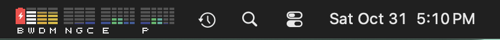
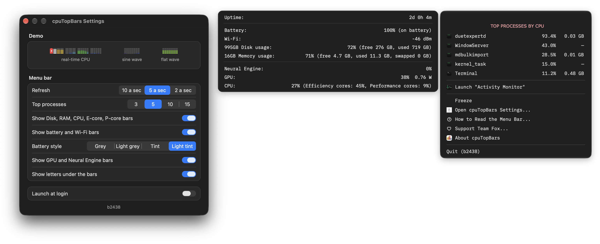
Rest the pointer on a bar for a second and its reading appears below the menu bar.
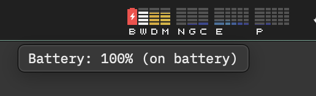
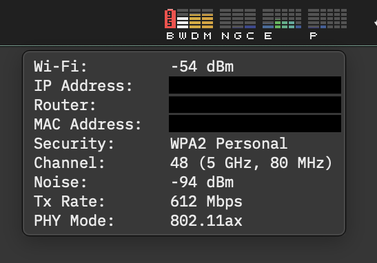
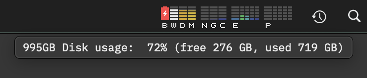
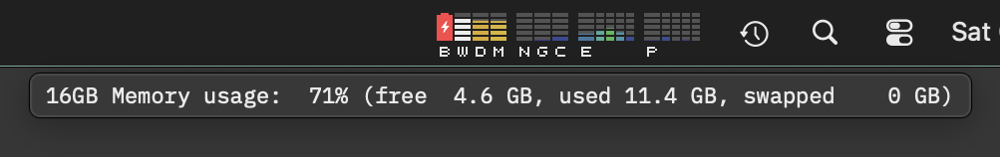
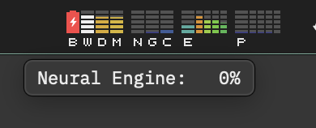
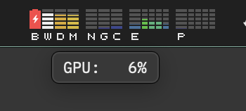
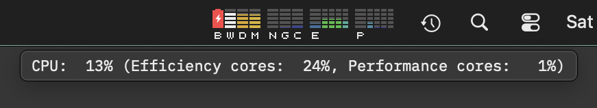
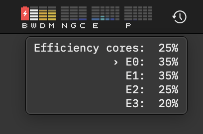
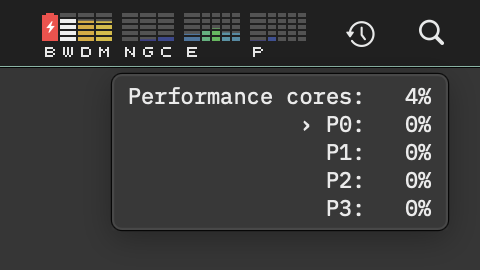
Bars for the battery, Wi-Fi, disk, memory, Neural Engine, GPU and CPU, then one for each core. Choose 2, 5 or 10 updates a second, and switch any group of bars off in Settings.
Your busiest processes ranked by CPU, each with its share and, for your own processes, its memory. Freeze the list to read it while the graph keeps running.
Open the menu and a panel beside it shows uptime, battery, Wi-Fi signal, disk, memory with swap, GPU, Neural Engine and CPU by core type.
Click a process to see its man page, where it has one, and its arguments and environment. Activity Monitor is one click away too.
If you keep the Battery and Wi-Fi items only to check their status, these bars can take their place. They have none of those items' controls, and they do not show the network's name.
"How to Read the Menu Bar" opens a window that explains every bar and color with drawn examples. Settings opens with a live demo of the graph.
The same code, built two ways. The App Store asks every app to run in its sandbox, and the sandbox limits what an app may see of other processes.
Both need macOS 27 or later.
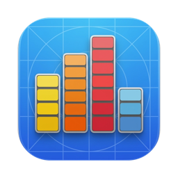
devTopBars is the paid app built on cpuTopBars. It adds usage bars for an AI coding plan's limits and live sessions, LAN, WAN and VPN address rows, and a way to keep your Mac awake while a chosen process runs. See devTopBars →
cpuTopBars makes no network requests. Every reading comes from your Mac itself; there are no accounts, no analytics and no third-party code. The one link out, "Support Team Fox", opens a page in your browser only when you choose it.
The full source is on GitHub, so you can check every line. It is the same local-first stance behind everything halfmarble builds; see the Glass Box.
5% of software net profits pledged:
2.5% to Team Fox, the grassroots fundraising program of The Michael J. Fox Foundation
2.5% to Public Health Collaboration (PHC)
halfmarble is an independent Team Fox third-party fundraiser.